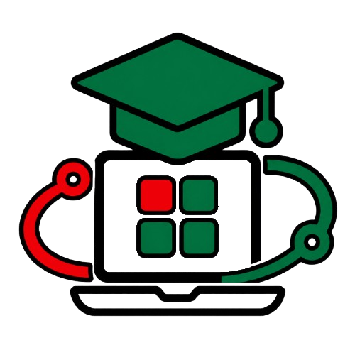

Moodle
Se atente às atualizações das missões da disciplina de Desenvolvimento Front-End e de outras matérias.

Aluno: Pietro Pereira
Curso: Engenharia de Computação
Objetivo do sistema: Criar um portal acadêmico para reunir informações importantes para estudantes, professores e visitantes.
O IFSP Connect é um projeto desenvolvido ao longo da disciplina de Desenvolvimento Front-End.
Durante as próximas missões, novos conteúdos e recursos serão adicionados ao projeto.
Ao final da jornada, o IFSP Connect será uma aplicação web completa, organizada e interativa.

O Projeto IFSP Connect consiste em um website fictício, criado para acompanhar a evolução do aluno durante o curso de Desenvolvimento Front-End (GRUDSFR). A cada missão, o projeto sofrerá alterações de acordo com as novas funcionalidades apresentadas, colocando-as em prática no website.
Ao final das três unidades, o IFSP Connect já terá evoluído para uma aplicação web completa, com páginas estruturadas em HTML e funcionalidades implementadas com JavaScript e desenvolvidas por CSS.
Durante o desenvolvimento, recursos como Página inicial (Home), Página sobre a instituição, Área de notícias, Agenda de eventos, Galeria de imagens, Componentes interativos e entre outros serão apresentados e criados. Ao final da disciplina, o aluno terá desenvolvido um portfólio completo para apresentar todos os seus conhecimentos do curso.
Se atente às atualizações das missões da disciplina de Desenvolvimento Front-End e de outras matérias.
Fique de olho nos avisos e atualizações dos professores no SUAP.
| Curso | Duração | Turno |
|---|---|---|
 Técnico em Automação Industrial Técnico em Automação Industrial |
1,5 anos | Noturno |
 Técnico em Desenvolvimento de Sistemas Técnico em Desenvolvimento de Sistemas |
1 ano | Vespertino |
 Técnico em Sistemas de Energia Renovável Técnico em Sistemas de Energia Renovável |
1,5 anos | Vespertino |
| Curso | Duração | Turno |
|---|---|---|
 Técnico em Mecatrônica integrado ao Ensino Médio Técnico em Mecatrônica integrado ao Ensino Médio |
4 anos | Vespertino |
 Técnico em Informática integrado ao Ensino Médio Técnico em Informática integrado ao Ensino Médio |
4 anos | Vespertino |
| Curso | Duração | Turno |
|---|---|---|
 Licenciatura em Matemática Licenciatura em Matemática |
4 anos | Matutino / Noturno |
 Tecnologia em Análise e Desenvolvimento de Sistemas Tecnologia em Análise e Desenvolvimento de Sistemas |
2,5 anos | Noturno |
 Tecnologia em Automação Industrial Tecnologia em Automação Industrial |
3,5 anos | Integral |
 Bacharelado em Engenharia de Computação Bacharelado em Engenharia de Computação |
5 anos | Integral |
 Bacharelado em Engenharia de Controle e Automação Bacharelado em Engenharia de Controle e Automação |
5 anos | Integral |
| Curso | Duração | Turno |
|---|---|---|
 Computação Aplicada Computação Aplicada |
1,5 anos | Não Informado |
 Tecnologias Aplicadas à Educação Tecnologias Aplicadas à Educação |
1,5 anos | Não Informado |